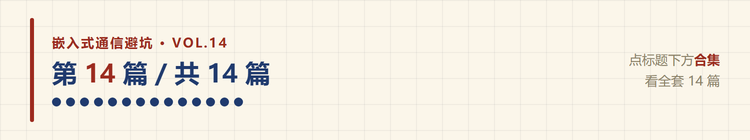
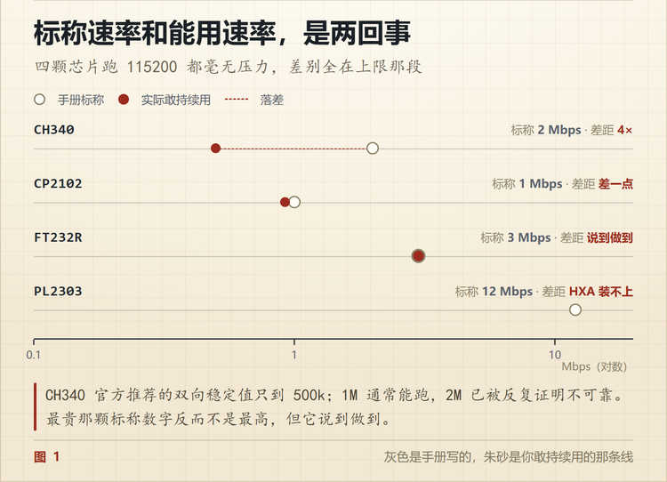
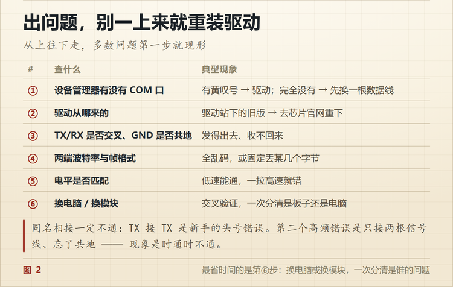

CH340、CP2102、FT232 横评，USB 转串口芯片怎么选
🐵 程序小猴 · 嵌入式通信避坑 Vol.14
一个模块便宜的 5 块，贵的 35 块。差这 7 倍，差的到底是什么。

串口是嵌入式工程师的听诊器。
板子不响应、程序跑飞、启动日志没输出，头一件事都是把串口线接上。
于是每个人抽屉里都躺着几个 USB 转串口模块。但很少有人分得清手里的到底是哪颗芯片，直到某天它突然不干活了。
这篇把市面上四种主流芯片摊开讲。不背参数，只说哪些参数会在半夜坑你。
一、四颗芯片，先看这张表
| 芯片 | IO 电平 | 标称最高速率 | 收发缓存 | 驱动签名 | 模块参考价 |
|---|---|---|---|---|---|
| CH340 | 3.3V / 5V | 2 Mbps | 32 + 32 B | 第三方签名 | 3~5 元 |
| CP2102 | 3.3V（5V 容忍） | 1 Mbps | 576 + 640 B | WHQL | 十几元 |
| FT232R | 1.8~5V 可配 | 3 Mbps | 128 + 256 B | WHQL | 30 元上下 |
| PL2303 | 1.8~3.3V | 6~12 Mbps | 512 B | 版本受限 | 几元 |
CH340 和 CP2102 是国内开发板配得最多的两颗，FT232R 是工业现场的老牌，PL2303 多见于便宜的成品线。
价格是 2026 年 9 月的散片与模块行情，浮动能有一倍，只作量级参考。
先把话说前头。这四家跑 115200 都毫无压力。 你日常调的 99% 的板子，用哪颗都一样。
差别会在三个地方冒出来，高速、老系统、长线。一个一个看。
二、CH340 便宜，但标称 2Mbps 别真信
CH340 是沁恒的芯片，国内开发板配得最多，便宜到几乎不占成本。
手册写的波特率范围是 50bps 到 2Mbps，看着很能打。但官方自己推荐的双向稳定速率只到 500k。社区实测下来，1M 通常能跑，2M 已经被反复证明不可靠。
这不是 CH340 的缺陷，是它便宜的方式。标称上限不等于持续可用上限，这句话对四颗芯片都成立。
买 CH340 模块还得看子型号，外围电路不一样。
| 子型号 | 晶振 | 说明 |
|---|---|---|
| CH340G | 需外接 12MHz 晶振 + 22pF 电容 | 最老款，晶振虚焊就枚举不了，新设计别再选 |
| CH340C | 内置 | 引脚兼容 G，省掉晶振，现在的首选 |
| CH340N / E | 内置 | 引脚更少、体积更小，省掉部分功能脚 |
| CH340B | 内置 | 带 EEPROM，可以配序列号 |
| CH340K | 内置 | 内置二极管，防目标板反灌电流 |
| CH340X | 内置 | 3.3V 供电时 IO 可 5V 容忍 |
自己画板的话，CH340G 的晶振起不来是最经典的「电脑识别不到 USB 设备」。模块级产品基本已经是 C 或 N 了，不用管。
驱动只从沁恒官网下（找 CH341SER 那个安装包，CH340 和 CH341 共用）。Linux 和 macOS 新版自带，插上就有。
三、CP2102 的缓存，比 CH340 大了将近 18 倍
CP2102 是 Silicon Labs 的，贵一档。它有个容易被忽略的优势。收发缓存 576 + 640 字节，而 CH340 只有 32 + 32 字节。
缓存小有个直接后果。主机端稍微卡一下，数据就可能丢。你反复调不出来、换个波特率就好一点、加个延时就能过，那种玄学丢包，根子有时候在这儿。
它还有一点被误传很久。CP2102 的 IO 是 3.3V，但输入 5V 容忍。 接 5V 的 MCU 串口是可以的，不必加电平转换。PL2303 的部分型号同理。
新版叫 CP2102N，速率提到 3Mbps，多了几个 GPIO，驱动一样是 WHQL 签名，Windows 上不折腾。
四、FT232 贵在哪，还有那个默认 16ms 的坑
FTDI 的 FT232R 是最老牌的方案。早年间「USB 转串口」干脆被叫成「FTDI 线」。
它贵有贵的道理，IO 电平 1.8V 到 5V 可配、驱动极稳、工业现场跑了十几年。但它有个默认参数会让你的通信慢得莫名其妙。
latency timer 默认 16ms。
主机端可能要等最多 16ms 才把你那几字节拿走。做问答式的小包通信，一轮多 16ms，十轮就是 160ms，体感就是「怎么这么卡」。
改成 1ms 花不了几分钟。Windows 在设备管理器里找到对应串口，进高级设置改。Linux 下改 /sys/bus/usb-serial/devices/ttyUSB0/latency_timer，要永久生效就写一条 udev 规则。
还有件事得知道。FT232 因为贵，山寨最多。2014 年 FTDI 推过一版只认真芯片的驱动，把山寨芯片直接「变砖」。他们后来撤回了这版驱动，但已经伤了不少人。你手上那根「FT232 线」，未必是真的。
更实际的问题是，与其赌真假，不如按需求选。普通调试根本用不到 FT232。
五、PL2303 只记一条，别买 HXA 老款
Prolific 的 PL2303 历史包袱最重。
HXA / XA 老版本已经停产，Windows 10 之后的新驱动直接不支持，插上去要么装不上，要么装上了报错。
表现就是，买来一堆便宜的成品线，别人能用，你这台不行。不是你的问题，是线太老。
要买就认准 TA / HXD / GC / GS 这些后缀的新型号，驱动去 Prolific 官网下对应版本。看到价格特别离谱的「USB 转串口线」，先问是什么芯片。
六、标称速率和能用速率，是两回事
把四家的「手册写的」和「你实际敢用的」并排一放，差距就出来了。
| 芯片 | 手册标称上限 | 实际敢持续用的 | 说明 |
|---|---|---|---|
| CH340 | 2 Mbps | 500 kbps | 官方推荐双向上限；1M 通常能用，2M 不可靠 |
| CP2102 | 1 Mbps | 921600 | 再往上就要换 CP2102N |
| CP2102N | 3 Mbps | 3 Mbps | 缓存和驱动都跟得上 |
| FT232R | 3 Mbps | 3 Mbps | 稳定区间就等于标称区间 |
| PL2303 | 6~12 Mbps（看型号） | 分型号差异大 | TA / GC 等新型号可以，HXA 直接不能用 |

最贵的那颗，标称数字反而不是最高的，但它说到做到。
你挑芯片的时候，看的是手册上那个数字，还是别人实际能跑住的那条线？
七、比芯片更容易出问题的三件事
芯片选对了，线接错了照样不工作。这三条比选型更高频。
一、TX 要接 RX，GND 必须共地。 同名相接一定不通，这是新手最容易犯的错。另一个高频错误是不接 GND，只接两根信号线，现象是时通时不通，或者干脆全是乱码。
二、3.3V 和 5V 别硬接。 模块上通常有跳线选 VCC 输出，但注意那是 VCC，不代表 TX/RX 的电平会跟着变。5V 的 TX 直连 3.3V 器件的 RX，轻则通信不稳，重则打坏 IO。
三、模块的 VCC 不是电源。 大部分模块只是把 USB 的 5V 引出来，能给多大电流很有限。想用它给目标板供电，先查规格，别硬怼。
八、出问题就按这个顺序查
不要一上来就重装驱动。从上往下走，多数问题第一步就现形。

这里面最省时间的是交叉验证。换台电脑或换个模块，比盯着日志看快得多。
九、那到底怎么选
一句实话。日常调板子，CH340 和 CP2102 就够了，便宜、够用、驱动好装。
要跑 1Mbps 以上的持续传输，或者做问答式的低延迟通信，往 CP2102N 和 FT232 靠。
唯一要避开的，是那些不知道芯片型号的便宜成品线。 省下的十几块钱，会在某个赶进度的晚上连本带利还回来。
这笔账，你算过吗？

📌 这是「嵌入式通信避坑」第 14 篇，也是系列最后一篇，全套 14 篇到此收官。
💬 同样花 30 块，你是买一个真 FT232，还是买六个 CH340 备着？评论区说个理由。